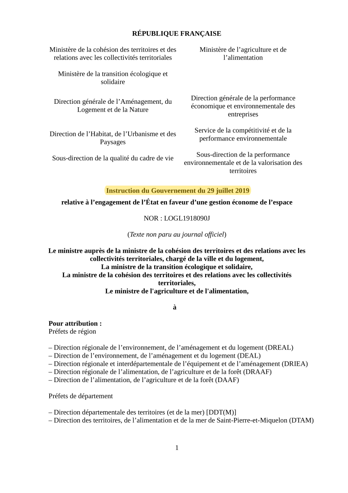

29-07-2019 - Circulaire gestion économe espace
En Juillet 2019, le gouvernement Macron envoie à tous les élus cette directive dans laquelle il les engage à ne plus artificialiser les espaces agricoles.
Source d'origine: Legifrance.gouv.fr